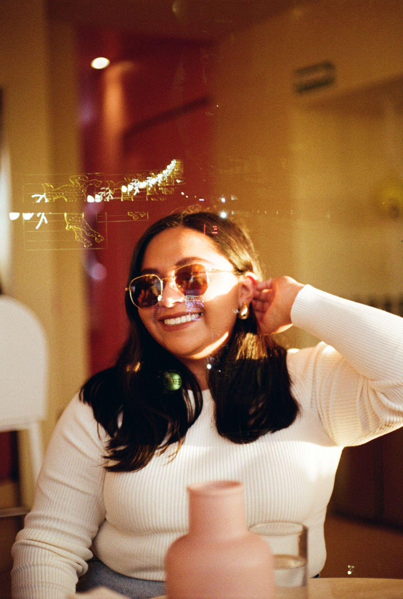
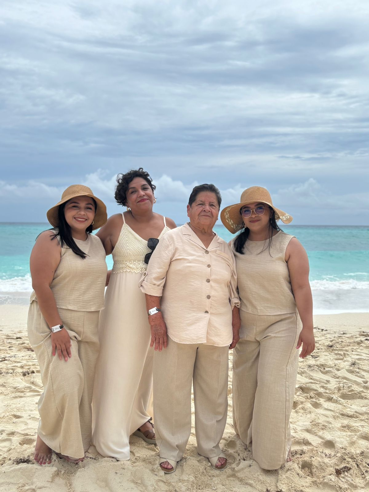

¿Quien soy?
Soy Vanessa Hernández Ortega, tengo 24 años y estudio Diseño Gráfico. Vivo en Puebla, una ciudad que me inspira. Me apasiona el arte en todas sus formas, por eso disfruto mucho visitar museos y galerías, donde siempre encuentro nuevas perspectivas que influyen en mi creatividad.
Me encanta descubrir cafeterías locales, esos espacios acogedores donde puedo relajarme, inspirarme y disfrutar de una buena taza de café mientras observo mi entorno. Además, soy una persona curiosa y aventurera, siempre en busca de conocer nuevos lugares. Viajar y explorar diferentes destinos me da la oportunidad de ampliar mi visión del mundo, algo que definitivamente enriquece mi enfoque como diseñadora.
Mi familia
Mi familia está formada por tres personas muy importantes para mí: mi mamá, Imelda; mi abuelita, Carmen; y mi hermana gemela, Valeria. Somos muy unidas, y lo que más valoro es la confianza y la comunicación que tenemos entre nosotras. Siempre nos apoyamos mutuamente, y no importa lo que pase, sé que puedo contar con ellas. Nos gusta pasar tiempo juntas, compartir nuestras vivencias y mantenernos cerca, lo que ha creado un vínculo muy especial en nuestra relación familiar.
Mis hobbies
viajar

ir a galerias

Salir con amigos a cafeterias

Tomar cursos o ponencias - workshop

Mis libros favoritos

Mis libros favoritos son Los cuatro acuerdos, Comer, rezar y amar, y El principito, porque me han ayudado a crecer personalmente y a reflexionar sobre temas importantes en mi vida. Los cuatro acuerdos me enseñan principios que trato de aplicar día a día para vivir con más paz y armonía, tanto conmigo misma como con los demás. Comer, rezar y amar es un viaje de transformación que me inspira a buscar un equilibrio emocional y espiritual en diferentes aspectos de mi vida. Y El principito siempre me recuerda la importancia de lo esencial, el valor de la amistad y el amor desde una perspectiva sencilla pero profunda.